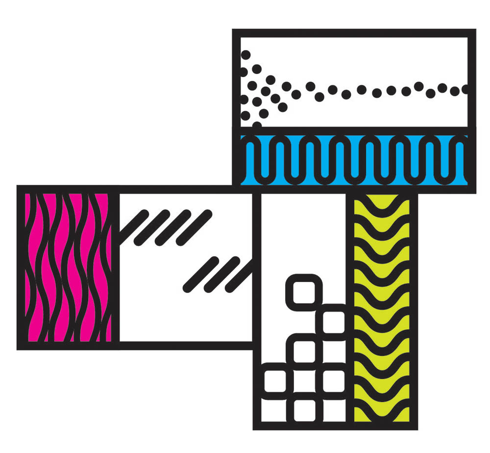

Building a community of scientists and engineers focused on ground-breaking research at the intersection of the biological sciences and bioengineering.
JSCBB E-Wing Opens & Computational Biology Cluster Hire
2020
Leadership Evolution
Roy Parker Begins as 2nd Director
2
Regenerative Medicine

Importance
Regenerative medicine is an area of great need as well as intense growth. There is strong investment potential in the research sector (for example, the recent NIH Regenerative Medicine Innovation Project) as well as the financial sector, where this is projected to be a $39B market by 2023 (representing 32% growth from 2016 market value).
The need is rooted in the many individuals impacted by a myriad of conditions ranging from genetic diseases to heart attacks to age-related functional decline. In many cases, the tissue damage can be both permanent and progressive, worsening with time. The lack of cures or even effective therapeutics for many diseases leaves a large pool of unmet need. In cases where organ transplantation is the best or only option, the gap is even greater. Patients are faced with organ shortages, invasive surgeries, lifelong management, and rejection potential.
The growth stems from revolutionary advances in biology and technology which permit a personalized approach to tissue regeneration or replacement. This is interdisciplinary by necessity as it represents a synergy between tissue-mimicking synthetic biomaterials, adult stem cell technology, and gene editing.
Our Unique Position
This field depends on strong collaboration between bioengineers and biologists in order to develop living materials for patient intervention. BioFrontiers not only has current faculty with fruitful, years-long collaborations in this area but is actively adding faculty with regenerative medicine research programs. We have three leaders in the production of biosynthetic materials in Kristi, Jason, and Stephanie and aim to build on their core in the next year with another hire in this area.
3
Who We Are
The BioFrontiers Institute integrates faculty from 10 departments across the CU Boulder Campus.
Researchers from the life sciences, physical sciences, computer science and engineering are working together to uncover new knowledge at the frontiers of science and partnering with industry to transform their discoveries into new tools. We believe that a diverse faculty is essential to achieving our scientific mission and are aligned with the CU Boulder Inclusion, Diversity, and Excellence in Academics Plan.
Get to know some of our research groups focused on regenerative medicine.
Anseth
Kristi Anseth
The Anseth group specializes in developing biomaterial scaffolds with highly-controlled architectures and chemistries for three-dimensional cell culture, tissue regeneration, and biological assays.
Leinwand
Leslie Leinwand
Leinwand lab focuses on the genetics and molecular physiology of inherited diseases of the heart and skeletal muscle, and how biological sex modifies heart and skeletal muscle.
Bryant
Stephanie Bryant
Designing 3D synthetic hydrogel environments with biomolecular and mechanical cues to control cellular functions in physiological environments.
Calve
Sarah Calve
The Musculoskeletal Extracellular Matrix Laboratory (MEML) characterizes the material properties of assembling tissues to establish design parameters for regenerative therapies.
Olwin
Brad Olwin
Mechanistic studies of skeletal muscle regeneration, focusing on skeletal muscle stem cells through the lens of biogenesis, stem cell failure in neuromuscular diseases, and age-related muscle loss.
Ferguson
Virginia Ferguson
Studying how tissue quality or underlying microstructure, composition, and material properties influence the resulting mechanical behavior and alterations by disrupted mechanical loading, aging, or disease.
Neu
Corey Neu
The Soft Tissue Bioengineering Laboratory develops technology for fundamental study and engineering of connective and cardiac tissues with the aim to provide new mechanobiology-informed therapies for conditions such as arthritis and cardiac fibrosis.
4
Boulder, CO and the Front Range
Learn what it's like to live a mile high at the foothills of the Rocky Mountains.
Boulder and CU campus in springtime.
The Boulder/Denver area ranked #8 in the Top Ten Largest Life Sciences Clusters in a new report released by JLL.
More resources are available to learn about being an active member of the BioFrontiers and CU Boulder community. Learn about BioFrontiers cores, facilities, and other collaboration across the CU sytem.